AME
- あの
- ヌメ
- アヌ
- あめ
ARI
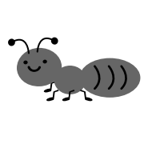
- めけ
- アリ
- ぬリ
- アサ
INU
- いの
- イヌ
- トメ
- いめ
HERIKOHUTA
- へサユフク
- へけこふに
- ヘリコフタ
- へりにふた
KASA
- かさ
- かち
- カけ
- カリ
METAKA
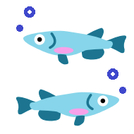
- メケカ
- ぬたか
- メマカ
- めたか
NOKOKIRI
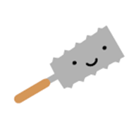
- めこきサ
- のろきけ
- ノコキリ
- フロキリ
NORI
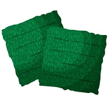
- のけ
- メリ
- のサ
- ノリ
NUNO
- のぬ
- ヌノ
- のあ
- ぬめ
NURETA
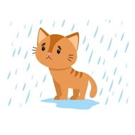
- あわに
- ノフク
- メノヌ
- ぬれた
REKISI
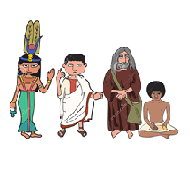
- しきし
- レキシ
- てキツ
- ルきし
SIKA
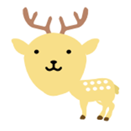
- した
- ツカ
- シカ
- しね
SORE

- それ
- ンフ
- てね
- ソフ
SOTUKUSU
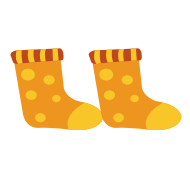
- ンシクフ
- そつくさ
- そつくす
- ソツケフ
SU IKA
- フイカ
- ちりか
- フトカ
- すいか
TEHUKURO
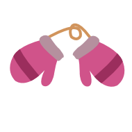
- てふへこ
- ひふくろ
- テフクロ
- モスケユ
SUSUME
- すすめ
- ヌヌノ
- すすぬ
- フフメ
TUHAME
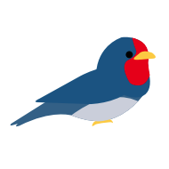
- シクノ
- つはめ
- ツヌア
- つにぬ
SU ITO U
- すいとう
- ストイウ
- ヌトイワ
- すリてつ
TO UHU
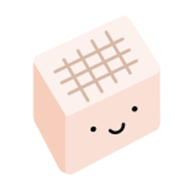
- つうふ
- トワレ
- トウフ
- てうふ
YUME
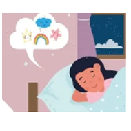
- ゆの
- コア
- ユヌ
- ゆめ
YURE
- ゆわ
- ユレ
- ゆね
- ロフ
- It grew a little
- It left fewer women
- It shrank a lot
- It left more women
- They had fewer sons after the war.
- They had fewer children per family.
- They had many children per family.
- They had more sones before the war.
- Canada
- England
- Japan
- USA
- Canada
- England
- Japan
- USA
- There are not enough women
- There are not enough men
- There are not enough young people
- There are not enough elderly people
- With a job, women can't get married
- Without a job, men can't get married
- Jobs are essential to a happy family
- Jobs take men away from their families
- The great lakes area
- The Hudson Bay area
- The Gulf coast of the US
- The east coast of the US
- They won't be able to pay for elder care
- The young people will not get enough jobs
- They won't be able to pay for child care
- The elderly people will not be able to retire